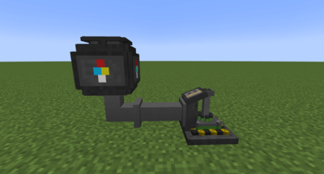
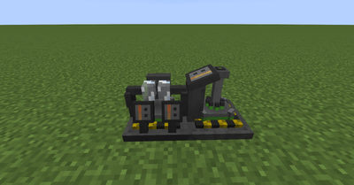

Gas Centrifuge
Advertisement
Role
The centrifuge separates uranium hexafluoride into its two isotopes: U-235 (fissile) and U-238. This is a key step in producing nuclear fuel.
Separation Ratio
| Product | Proportion | Usage |
|---|---|---|
 U-235 U-235 | 17.5 % | Enriched Fuel |
 U-238 U-238 | 82.5 % | Armor, other uses |
 Fissile Dust (Waste) Fissile Dust (Waste) | +10 % (added) | Reprocessing |
Waste is additive
The 10% waste is not subtracted from the U-235/U-238 distribution — it is added on top. You therefore get more material out than what goes in.
How it works
- Requires at least 42 mB of hexafluoride in the input tank to start a cycle
- Operates continuously as long as the tank is supplied
- Produces an item once 2,500 mB of a material is accumulated (= 100% in the interface)

Hexafluoride Supply
Two methods to supply the centrifuge:
- Connect a gas pipe to the back of the centrifuge
- Let the Nuclear Boiler inject its output directly into the centrifuge

What to do with waste?
The Fissile Dust produced from waste can be reprocessed in other machines to obtain useful materials. Don't throw it away!
Homage to Atomic Science
The 2,500 mB counter system is a legacy from the Atomic Science mod. It’s not 100% realistic, but it is intentional.